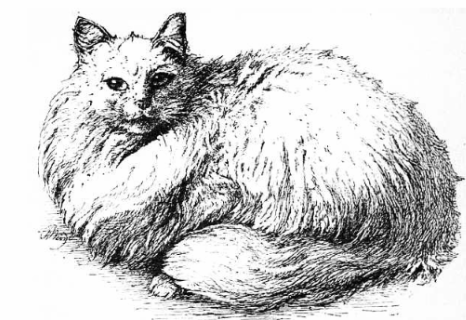

Usefulness Of Cats
- Introductory
- The First Cat Show
- Habits
- Trained Cats
- Usefulness Of Cats

In our urban and suburban houses what should we do without cats? In our sitting in our bedrooms our libraries in our kitcgens and stoerooms our farms barns and rickyards in our docks our graneries our ships and ourwharves in our corn markets meat markets and other places too numerous to mention how useful they are! In our ships however the rats oft set them at defiance; still they are of great service.
How wonderfully patient is the cat when watchingb for rats or mice, awaiting their eagress from their place of refuge or that which is their home! How well Shakespeare in Pericles, act iii., describes this keen attention of cats to its natural pursuit!
The cat, with eyne of burning coal, now crouches from(before) the mouse's hole
A slight rustle and the fugitive comes forth; a quick, sharp, resolute mtion, and the cat has proved its usefulness. let any one have a plague of rats and mice, as i once had, and let them be delivered therefrom by cats, as i was, and they will have a lasting and a kind regard for them.
Let anyone have a plague of rats and mice, as I once had, and let them be delivered therefrom by cats, as i was, and they wil have a lasting and kind regard for them.